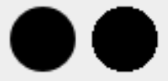
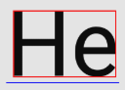
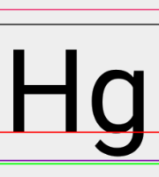
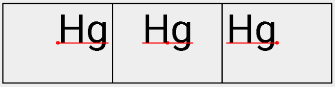

在Android的繪製過程中，相較Path更為重要的物件；沒有Paint，Canvas無法正常繪製出任何東西。
Paint，就是如畫筆一般的角色。你可以指定Paint的型態，這會決定在繪製結果會是以線條、色塊等的方式呈現。同時也可以指定顏色，甚至也可如現實生活中的一些特殊畫筆，指定漸層顏色。
除了畫筆的特性，Paint也負責處理繪製字串時的參數，因此Paint的使用層面比較廣。
以下將從畫筆和字串控制兩種不同的特性，來介紹函示。
使用方式
paint.setColor(android.R.color.black); |
就算沒有前面的設定，Paint依然有預設值可以正常使用。詳細設定可參照Paint原始碼。
畫筆
setAntiAlias()
- 參數：boolean aa，預設false。
是否開啟反鋸齒，效果如下圖：

左為開啟後，又為開啟前
setColor()
- 參數：int Color，預設黑色。
可決定繪製出來的字串顏色。
setStyle()
參數：Style style，預設是FILL。
public enum Style {
FILL (0), // 填滿
STROKE (1), // 線條
FILL_AND_STROKE (2); // 填滿加線條
...
}
可以決定Path繪製的方式，效果如下圖：
由左至右分別是：FILL、STROKE和FILL_AND_STROKE。
setStrokeWidth()
- 參數：float width
與Style.STROKE和Style.FILL_AND_STROKE搭配使用，可以決定線條的寬度。
STOKE的繪製是依照路徑，往內和往外延伸，所以STROKE的寬度會影響圖樣最後呈現的大小。示意圖可參考setStyle()段落。
字串控制
setTextSize()
- 參數：float textSize
可以決定繪製的字串的字體大小
measureText()
- 參數：CharSequence text, int start, int end
可計算傳入的字串(text)，其指定範圍(start - end)的字所佔用的寬度。
getTextBounds()
- 參數：String text, int start, int end, Rect bounds
類似measureText()，唯一不同是得到範圍(bounds)會盡可能的切齊字串(text)的邊緣，比較圖如下：

紅框表示getTextBounds()回傳的範圍，藍線表示measureText()取得的寬度。
值得一提的是如果用繪圖軟體如Sketch，畫出來的字串邊界會是measureText()的結果。
getFontMetrics()
取得繪製字串時使用的FontMetrics，裡面的數值會因為setTextSize()而產生變化：
public static class FontMetrics { |
加上基準線(baseline)，參數由上(top)至下(bottom)，這些相對於實際上字體的位置如下：

要注意一點是，除了leading代表行距外，平常為0外。其他數值則是基準線往上或往下的相對值，所以top和ascent會是負數，而bottom和descent為正值。
setTextAlign()
- 參數：Align align，預設是LEFT。
public enum Align { |
Align用於指定字串繪製時，其位置的基準點。示意圖如下：
